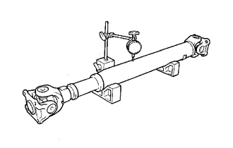
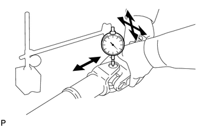

RM25T0E
_52
Drivetrain
_029905
DRIVE SHAFT / PROPELLER SHAFT
_0138402
PROPELLER SHAFT ASSEMBLY
G
DRIVE SHAFT / PROPELLER SHAFT PROPELLER SHAFT ASSEMBLY INSPECTION
CAUTION / NOTICE / HINT
- NOTICE:
- ·
When using a vise, place aluminum plates between the part and vise.
·When using a vise, do not overtighten it.
PROCEDURE

 37110
1.INSPECT PROPELLER SHAFT ASSEMBLY
37110
1.INSPECT PROPELLER SHAFT ASSEMBLY
a.

Using a dial indicator, check the propeller shaft assembly runout.
- Maximum runout:
0.8 mm (0.0315 in.)
If the propeller shaft assembly runout is more than the maximum, replace the propeller shaft assembly.
2.INSPECT SPIDER BEARING
a.
Check the spider bearings for wear or damage.
If necessary, replace the spider bearing.
b.

Check the spider bearing axial play by turning the yoke with holding the propeller shaft assembly tightly.
- Maximum bearing axial play:
0.05 mm (0.00197 in.)
If the axial play is more than the maximum, replace the spider bearing.